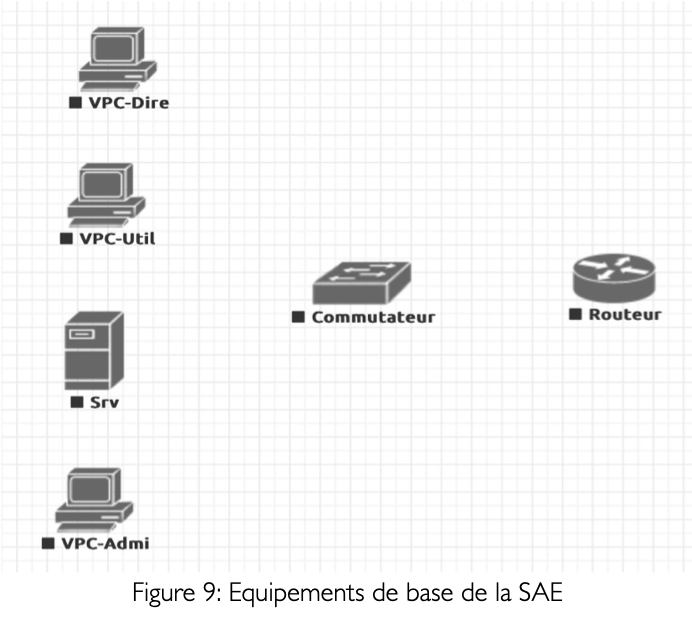

Administrer les réseaux et l'Internet
Configurer les fonctions principales des réseaux locaux, comprendre l'architecture des systèmes numériques, administrer des services et identifier les dysfonctionnements d'un réseau local.
Je m'appelle Jules Landauer, étudiant en BUT Réseaux et Télécommunications au campus Grillenbreit de Colmar. Mon objectif est de progresser dans les domaines des réseaux, de la cybersécurité et de l'administration de systèmes, avec une alternance chez Poulaillon pour la 2e et 3e année.
Présentation
Actuellement en Bachelor Universitaire de Technologie, je souhaite poursuivre dans le parcours ROM. Je suis diplômé d'un bac STI2D avec l'option SIN, obtenu avec la mention Assez Bien.
À la fin du Bachelor, j'aimerais m'insérer professionnellement, tout en restant ouvert à une poursuite d'études en école d'ingénieur. Mon objectif professionnel serait de travailler dans un environnement lié aux réseaux, à l'administration système ou à la cybersécurité, notamment dans des structures publiques ou sensibles.
Formation
Baccalauréat technologique Sciences et Technologies de l'Industrie et du Développement Durable, spécialité Systèmes d'Information et Numérique, mention Assez Bien.
Formation à l'IUT de Colmar, campus Grillenbreit, orientée réseaux, télécommunications, systèmes, services et développement d'outils informatiques.
Alternance chez Poulaillon dans le cadre du parcours ROM.
Permis B en boîte manuelle. Intérêt particulier pour les infrastructures réseau, la sécurité, les services Linux et la mise en ligne d'applications web.
BUT R&T
Configurer les fonctions principales des réseaux locaux, comprendre l'architecture des systèmes numériques, administrer des services et identifier les dysfonctionnements d'un réseau local.
Mettre en œuvre différents supports de transmission, effectuer des mesures, analyser les signaux, interconnecter des systèmes de ToIP et communiquer efficacement avec un tiers.
Lire, modifier et exécuter un programme, traduire un algorithme dans un langage donné, concevoir un site web et choisir des mécanismes de gestion de données adaptés.
SAE & réalisations
Travail de recherche et de sensibilisation sur les attaques de phishing : définition, fonctionnement, signes d'une attaque, mesures de protection et réactions à adopter en cas d'incident.
Mise en œuvre des concepts réseau vus en début de formation : commutation, routage, configuration d'équipements Cisco et découverte du fonctionnement d'un réseau informatique.

Construction d'une interface réseau avec GNS3, mise en place de VLAN, routage inter-VLAN, services réseau et règles simples de sécurité comme port-security et ACL.
Création d'un premier portfolio en ligne afin de présenter son parcours, ses compétences et ses productions dans un format web structuré.
Conception d'un système de tri automatique des 100 plus gros fichiers, création d'un fichier JSON contenant leurs informations, affichage des résultats sous forme de camembert puis suppression des fichiers sélectionnés. Le projet s'est terminé par une soutenance orale.
Mise en place d'une solution informatique pour une entreprise : application Django reliée à MariaDB, conception de la base de données, interface web, pages de films, commentaires, gestion d'utilisateurs et administration.
Professionnalisation
À partir de la deuxième année du BUT Réseaux & Télécommunications, je poursuis mon parcours ROM en alternance chez Poulaillon. Cette expérience me permettra d'appliquer mes compétences techniques en environnement professionnel et de progresser sur des missions concrètes liées aux réseaux et systèmes.
Contact
landjuju100@gmail.com
jules-landauer-51211533b
github.com/juju2303
Kappelen, 68510 — études à Colmar.